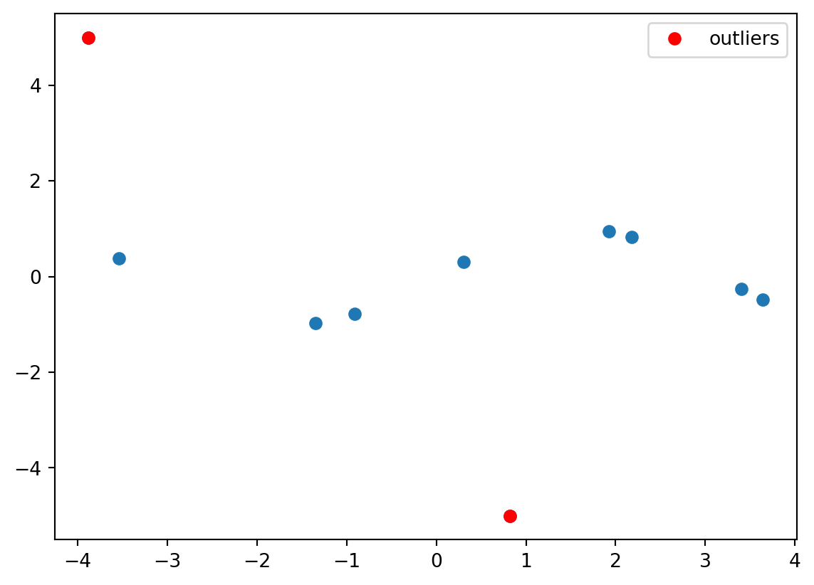
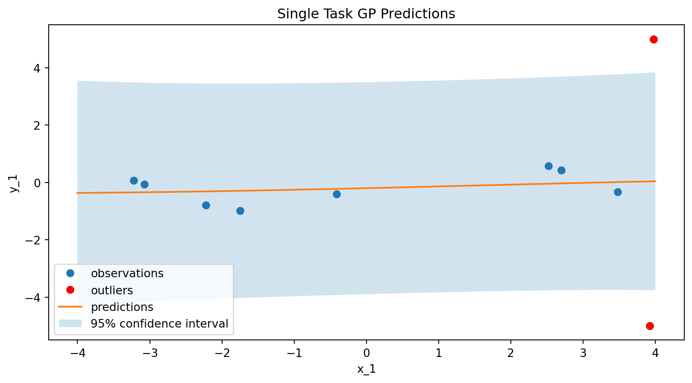
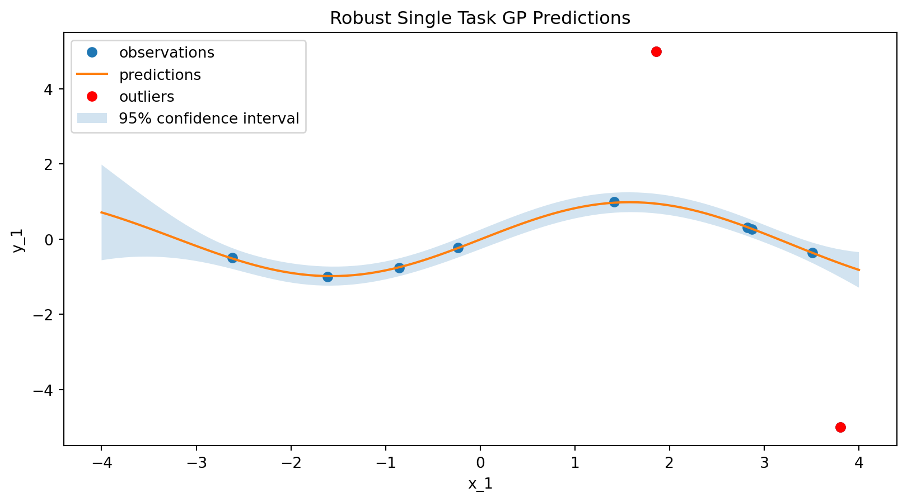
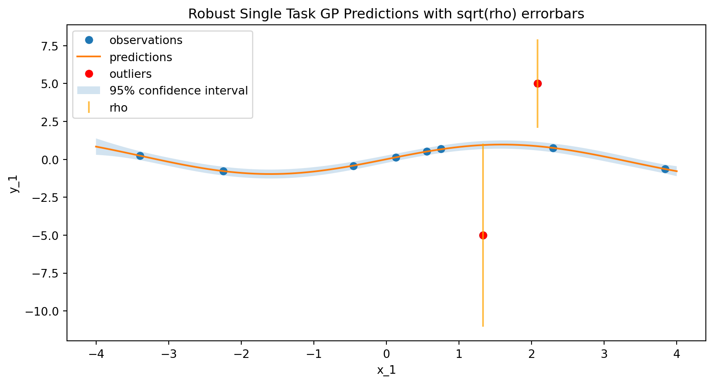
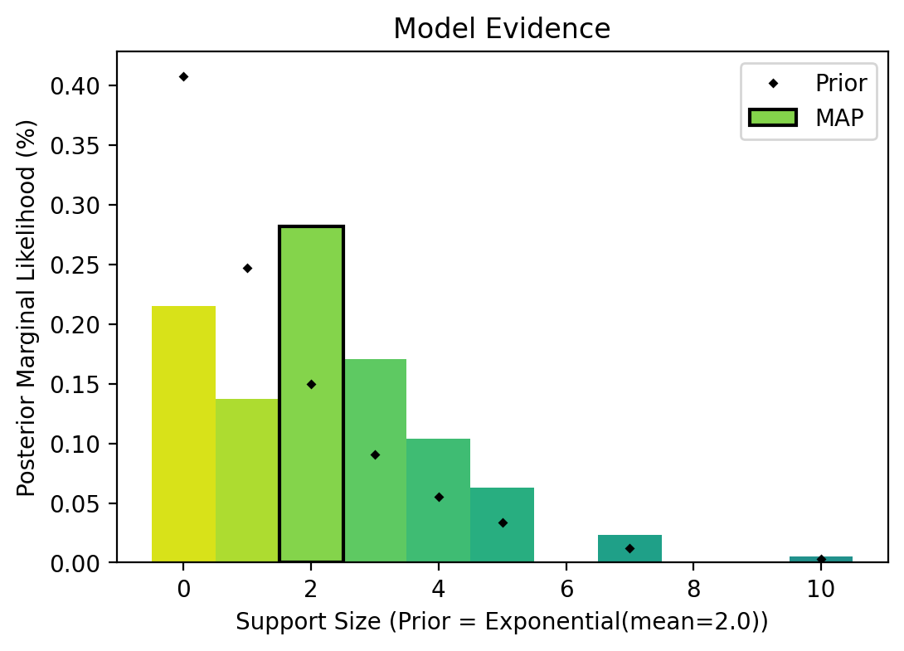

# Model imports
import matplotlib.pyplot as plt
import numpy as np
import pandas as pd
import torch
from torch import Tensor
import bofire.surrogates.api as surrogates
from bofire.data_models.domain.api import Inputs, Outputs
from bofire.data_models.features.api import ContinuousInput, ContinuousOutput
from bofire.data_models.surrogates.api import (
RobustSingleTaskGPSurrogate,
SingleTaskGPSurrogate,
)Outlier Detection and Robust GP
This notebook shows how to use RobustSingleTaskGPSurrogate in Bofire to autmomatically detect outliers in your data and/or fit Gaussian process models robust to outliers.
It is based on the Robust Gaussian Processes via Relevance Pursuit paper and is based on the accompanying implementation and tutorial in BoTorch
In this approach, the typical GP observation noise \(\sigma^2\) is extended with data-point-specific noise variances \(\rho\). A prior distribution is placed over the number of outliers \(S\), and through a sequential greedy optimization algorithm (see for details the links above) a list of models with variying sparsity levels \(|S|\) are obtained. The most promising model can then be selected through Bayesian model selection.
This tutorial will show how to use the model, how to obtain the data-point specific noise levels, and how to obtain the full model trace.
Imports
Setting up a Synthetic example
input_features = Inputs(
features=[ContinuousInput(key=f"x_{i+1}", bounds=(-4, 4)) for i in range(1)],
)
output_features = Outputs(features=[ContinuousOutput(key="y_1")])
experiments = input_features.sample(n=10)
experiments["y_1"] = np.sin(experiments["x_1"])
experiments["valid_y_1"] = 1
experiments["valid_y_2"] = 1
# prediction grid
x = pd.DataFrame(pd.Series(np.linspace(-4, 4, 100), name="x_1"))Let’s add two clear outliers
experiments.loc[0, "y_1"] = 5
experiments.loc[1, "y_1"] = -5plt.plot(experiments["x_1"], experiments["y_1"], "o")
# plot the last two points in red
plt.plot(
experiments["x_1"].iloc[:2],
experiments["y_1"].iloc[:2],
"ro",
label="outliers",
)
plt.legend()
plt.show()
Testing a SingleTaskGP
stgp_data_model = SingleTaskGPSurrogate(
inputs=input_features,
outputs=output_features,
)
stgp_model = surrogates.map(data_model=stgp_data_model)
stgp_model.fit(experiments)
stgp_predictions = stgp_model.predict(x)# plot the surrogate
plt.figure(figsize=(10, 5))
plt.plot(experiments["x_1"], experiments["y_1"], "o", label="observations")
# plot the outliers in red
plt.plot(
experiments["x_1"].iloc[:2],
experiments["y_1"].iloc[:2],
"ro",
label="outliers",
)
plt.plot(x["x_1"], stgp_predictions["y_1_pred"], label="predictions")
plt.fill_between(
x["x_1"],
stgp_predictions["y_1_pred"] - 2 * stgp_predictions["y_1_sd"],
stgp_predictions["y_1_pred"] + 2 * stgp_predictions["y_1_sd"],
alpha=0.2,
label="95% confidence interval",
)
plt.xlabel("x_1")
plt.ylabel("y_1")
plt.title("Single Task GP Predictions")
plt.legend()
plt.show()
Testing the Robust GP
data_model = RobustSingleTaskGPSurrogate(
inputs=input_features,
outputs=output_features,
)
model = surrogates.map(data_model=data_model)
model.fit(experiments)
predictions = model.predict(x)/opt/hostedtoolcache/Python/3.12.12/x64/lib/python3.12/site-packages/botorch/models/relevance_pursuit.py:156: UserWarning:
Converting a tensor with requires_grad=True to a scalar may lead to unexpected behavior.
Consider using tensor.detach() first. (Triggered internally at /pytorch/torch/csrc/autograd/generated/python_variable_methods.cpp:836.)
/opt/hostedtoolcache/Python/3.12.12/x64/lib/python3.12/site-packages/botorch/models/likelihoods/sparse_outlier_noise.py:104: InputDataWarning:
SparseOutlierNoise: Robust rho not applied because the last dimension of the base noise covariance (100) is not compatible with the last dimension of rho (10). This can happen when the model posterior is evaluated on test data.
# plot the surrogate
plt.figure(figsize=(10, 5))
plt.plot(experiments["x_1"], experiments["y_1"], "o", label="observations")
plt.plot(x["x_1"], predictions["y_1_pred"], label="predictions")
# plot the outliers in red
plt.plot(
experiments["x_1"].iloc[:2],
experiments["y_1"].iloc[:2],
"ro",
label="outliers",
)
plt.fill_between(
x["x_1"],
predictions["y_1_pred"] - 2 * predictions["y_1_sd"],
predictions["y_1_pred"] + 2 * predictions["y_1_sd"],
alpha=0.2,
label="95% confidence interval",
)
plt.xlabel("x_1")
plt.ylabel("y_1")
plt.title("Robust Single Task GP Predictions")
plt.legend()
plt.show()
Returning data point specific noise values \(\rho\)
model.predict_outliers(experiments)| y_1_pred | y_1_sd | y_1_rho | |
|---|---|---|---|
| 0 | -0.585385 | 0.392877 | 5.163665 |
| 1 | 0.408260 | 0.345614 | 4.840623 |
| 2 | 0.958547 | 0.124738 | 0.000000 |
| 3 | -0.801545 | 0.117048 | 0.000000 |
| 4 | 0.340014 | 0.138149 | 0.000000 |
| 5 | 0.455049 | 0.137806 | 0.000000 |
| 6 | -0.980257 | 0.128551 | 0.000000 |
| 7 | -0.563409 | 0.120564 | 0.000000 |
| 8 | 0.577434 | 0.127214 | 0.000000 |
| 9 | 0.904641 | 0.117854 | 0.000000 |
Plotting the data point specific noise values
# Get the outlier scores (rho) from the robust GP model
outlier_scores = model.predict_outliers(experiments)
# Plot the surrogate predictions
plt.figure(figsize=(10, 5))
plt.plot(experiments["x_1"], experiments["y_1"], "o", label="observations")
plt.plot(x["x_1"], predictions["y_1_pred"], label="predictions")
# plot the outliers in red
plt.plot(
experiments["x_1"].iloc[:2],
experiments["y_1"].iloc[:2],
"ro",
label="outliers",
)
# Plot sqrt(rho) as error bars on the observations
plt.errorbar(
experiments["x_1"],
experiments["y_1"],
yerr=outlier_scores["y_1_rho"].values,
fmt="none",
ecolor="orange",
alpha=0.7,
label="rho",
)
plt.fill_between(
x["x_1"],
predictions["y_1_pred"] - 2 * predictions["y_1_sd"],
predictions["y_1_pred"] + 2 * predictions["y_1_sd"],
alpha=0.2,
label="95% confidence interval",
)
plt.xlabel("x_1")
plt.ylabel("y_1")
plt.title("Robust Single Task GP Predictions with sqrt(rho) errorbars")
plt.legend()
plt.show()
Hyperparameter optimization
The RobustSingleTaskGPSurrogate also support hyperparameter optimization over different kernels, priors, etc.
# opt_surrogate_data, perf = hyperoptimize(surrogate_data=data_model, training_data=experiments, folds=4)
# surrogate = surrogates.map(opt_surrogate_data)Obtaining the full model trace
def bmc_plot(bmc_support_sizes: Tensor, bmc_probabilities: Tensor) -> None:
cmap = plt.colormaps["viridis"]
bar_width = 1
plt.title("Model Evidence")
for i, ss in enumerate(bmc_support_sizes):
color = cmap((1 - (len(bmc_support_sizes) - i) / (2 * len(bmc_support_sizes))))
plt.bar(ss, bmc_probabilities[i], color=color, width=bar_width)
i = bmc_probabilities.argmax()
map_color = cmap((1 - (len(bmc_support_sizes) - i) / (2 * len(bmc_support_sizes))))
plt.bar(
bmc_support_sizes[i],
bmc_probabilities[i],
color=map_color,
label="MAP",
edgecolor="black",
linewidth=1.5,
width=bar_width,
)
support_prior = torch.exp(-bmc_support_sizes / model.model.prior_mean_of_support)
support_prior = support_prior / support_prior.sum()
plt.plot(bmc_support_sizes, support_prior, "D", color="black", label="Prior", ms=2)
plt.xlabel(
f"Support Size (Prior = Exponential(mean={model.model.prior_mean_of_support:.1f}))"
)
plt.ylabel("Posterior Marginal Likelihood (%)")
plt.legend(loc="upper right")data_model = RobustSingleTaskGPSurrogate(
inputs=input_features,
outputs=output_features,
cache_model_trace=True,
)
model = surrogates.map(data_model=data_model)
model.fit(experiments)
predictions = model.predict(x)/opt/hostedtoolcache/Python/3.12.12/x64/lib/python3.12/site-packages/botorch/models/likelihoods/sparse_outlier_noise.py:104: InputDataWarning:
SparseOutlierNoise: Robust rho not applied because the last dimension of the base noise covariance (100) is not compatible with the last dimension of rho (10). This can happen when the model posterior is evaluated on test data.
figsize = (6, 4)
fig = plt.figure(dpi=100, figsize=figsize)
bmc_plot(model.model.bmc_support_sizes.detach(), model.model.bmc_probabilities.detach())